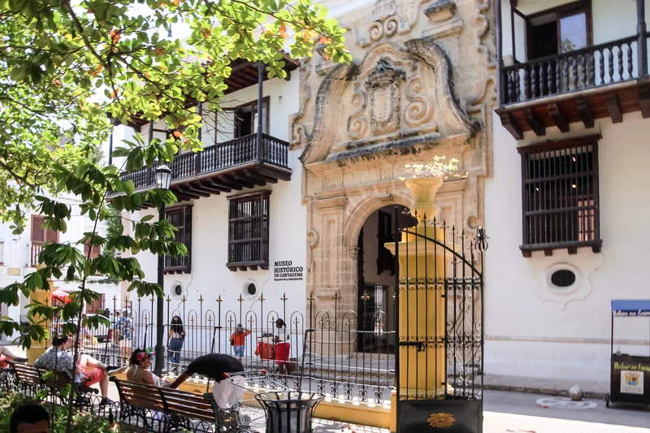
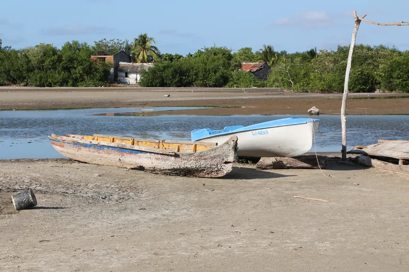

BORRADOR PRIVADO · Lugar 1 · sin aprobación ni publicación
Qué estás revisando: Cartagena
Apruebas por separado cada fotografía para su ubicación indicada y cada texto para su idioma. Nada está preaprobado. Las decisiones guardadas en este navegador son un borrador: exporta la revisión y compártela en este chat para registrar tus instrucciones. Aprobar componentes no autoriza publicar el destino.
Inventario ampliado: 17 sitios y 9 actividades. Los faltantes de fotografía se muestran en cada ficha; el ZIP aún es parcial.
Originales y textos primero. Ilustración editorial después de aprobación explícita, con una segunda revisión separada. Aún no se ha generado ninguna.
Las versiones modificadas tendrán una revisión nueva; las decisiones anteriores no se trasladan automáticamente.
1. Portada · alternativas visibles
Elige una opción y revisa por separado el original, su uso y licencia. Estas son referencias fotográficas; ninguna ilustración se generará antes de tu aprobación explícita de originales y textos.
CTG-01 · Opción 1 · original para posible portada · panorama Cartagena desde La Popa (2008); muestra bahía/ciudad, cruz dominante; sin recorte móvil ni escritorio

Norma Gòmez / Wikimedia Commons / CC BY 2.0; redimensionado y convertido a WebP · Procedencia · Licencia · Original sin conversión
Fotografía histórica; no acredita estado actual.
Alcance de aprobación: Opción 1 · original para posible portada · panorama Cartagena desde La Popa (2008); muestra bahía/ciudad, cruz dominante; sin recorte móvil ni escritorio exclusivamente.
CTG-PORTADA-OPCION-2 · Opción 2 · original para posible portada · San Felipe de Barajas (2011); patrimonio reconocible, no visión total de Cartagena; sin recorte móvil ni escritorio

JuanGris (Lucía Estévez) / Wikimedia Commons / CC BY-SA 3.0; redimensionado y convertido a WebP · Procedencia · Licencia · Original sin conversión
Fotografía histórica; no acredita estado actual.
Alcance de aprobación: Opción 2 · original para posible portada · San Felipe de Barajas (2011); patrimonio reconocible, no visión total de Cartagena; sin recorte móvil ni escritorio exclusivamente.
CTG-PORTADA-LICENCIA-1 · Licencia de referencia candidata de portada 1
es
Norma Gòmez
CC BY 2.0
https://creativecommons.org/licenses/by/2.0/
Uso comercial y adaptación permitidos; atribución obligatoria; ShareAlike: False
Alcance de aprobación: Licencia de referencia candidata de portada 1 exclusivamente.
CTG-PORTADA-LICENCIA-2 · Licencia de referencia candidata de portada 2
es
JuanGris (Lucía Estévez)
CC BY-SA 3.0
https://creativecommons.org/licenses/by-sa/3.0/
Uso comercial y adaptación permitidos; atribución obligatoria; ShareAlike: True
Alcance de aprobación: Licencia de referencia candidata de portada 2 exclusivamente.
CTG-PORTADA-TEXTO-es · Título, presentación y descripción de buscadores · es
es
Cartagena de Indias
Bolívar · Caribe colombiano
Murallas, barrios y memoria junto al Caribe
Cartagena reúne patrimonio urbano y vida caribeña. Recorre el centro histórico, reconoce las fortificaciones y reserva tiempo para Getsemaní, sus calles y la economía local. La visita también invita a mirar la historia de la ciudad más allá de sus fachadas.
Descubre Cartagena: centro histórico, Castillo de San Felipe de Barajas, Getsemaní, historia y opciones locales para preparar tu visita.
Alcance de aprobación: Título, presentación y descripción de buscadores · es exclusivamente.
CTG-PORTADA-TEXTO-en · Título, presentación y descripción de buscadores · en
en
Cartagena de Indias
Bolívar · Colombian Caribbean
City walls, neighbourhoods and memory by the Caribbean
Cartagena combines urban heritage with Caribbean life. Explore the historic centre, discover its fortifications and make time for Getsemaní, its streets and local economy. Look beyond the façades to understand the city’s history.
Explore Cartagena’s historic centre, San Felipe de Barajas Castle, Getsemaní, history and local businesses to plan your visit.
Alcance de aprobación: Título, presentación y descripción de buscadores · en exclusivamente.
CTG-PORTADA-TEXTO-pt-BR · Título, presentación y descripción de buscadores · pt-BR
pt-BR
Cartagena de Indias
Bolívar · Caribe colombiano
Muralhas, bairros e memória à beira do Caribe
Cartagena reúne patrimônio urbano e vida caribenha. Explore o centro histórico, conheça as fortificações e reserve tempo para Getsemaní, suas ruas e a economia local. A visita também convida a compreender a história da cidade além das fachadas.
Conheça Cartagena: centro histórico, Castelo de San Felipe de Barajas, Getsemaní, história e opções locais para planejar sua visita.
Alcance de aprobación: Título, presentación y descripción de buscadores · pt-BR exclusivamente.
2. Historia
Se aprueban únicamente los textos. No hay una fotografía asignada a historia en el paquete; las fotos de atractivos no se aprueban aquí.
CTG-HISTORIA-es · Texto de historia · es
es
La fundación colonial de Cartagena de Indias se fecha el 1 de junio de 1533. Su posición en una bahía caribeña la convirtió en un puerto estratégico del sistema colonial español. Esa historia incluye a poblaciones indígenas y africanas esclavizadas, y no se reduce a arquitectura y comercio.
Las defensas se construyeron y ampliaron durante varios siglos. Murallas y fuertes permiten leer la relación entre la ciudad, la bahía y las disputas por las rutas marítimas. El 11 de noviembre de 1811 Cartagena proclamó su independencia absoluta de España.
En 1984 la UNESCO inscribió el puerto, las fortalezas y el conjunto monumental. El reconocimiento comprende un patrimonio vivo: Centro, San Diego y Getsemaní conservan usos residenciales, culturales y comerciales.
Alcance de aprobación: Texto de historia · es exclusivamente.
CTG-HISTORIA-en · Texto de historia · en
en
Cartagena’s colonial founding dates to 1 June 1533. Its Caribbean bay made it a strategic port within the Spanish colonial system. This history includes Indigenous people and enslaved Africans, and extends beyond architecture and trade.
Defences were built and expanded over several centuries. Walls and forts reveal the relationship between the city, its bay and struggles over maritime routes. On 11 November 1811 Cartagena proclaimed its absolute independence from Spain.
In 1984 UNESCO inscribed the port, fortresses and group of monuments. This is living heritage: Centro, San Diego and Getsemaní retain residential, cultural and commercial uses.
Alcance de aprobación: Texto de historia · en exclusivamente.
CTG-HISTORIA-pt-BR · Texto de historia · pt-BR
pt-BR
A fundação colonial de Cartagena de Indias data de 1º de junho de 1533. Sua posição em uma baía caribenha fez dela um porto estratégico do sistema colonial espanhol. Essa história inclui povos indígenas e africanos escravizados e vai além da arquitetura e do comércio.
As defesas foram construídas e ampliadas ao longo de vários séculos. Muralhas e fortes revelam a relação entre a cidade, a baía e as disputas pelas rotas marítimas. Em 11 de novembro de 1811 Cartagena proclamou sua independência absoluta da Espanha.
Em 1984 a UNESCO inscreveu o porto, as fortalezas e o conjunto monumental. Trata-se de um patrimônio vivo: Centro, San Diego e Getsemaní mantêm usos residenciais, culturais e comerciais.
Alcance de aprobación: Texto de historia · pt-BR exclusivamente.
3. Lugares por conocer
Cada foto pertenece a la ficha identificada debajo. Aprobarla no aprueba otras secciones ni sus textos.
Centro histórico y murallas
Falta foto apta. Esta ficha está en investigación y NO está incluida en el paquete de integración actual.
CTG-LUGAR-centro-historico-es · Nombre y descripción de «Centro histórico y murallas» · es
es
Centro histórico y murallas
Recorre plazas y calles de Centro y San Diego, parte del conjunto patrimonial. La ciudad sigue habitada: respeta viviendas y circulación.
Alcance de aprobación: Nombre y descripción de «Centro histórico y murallas» · es exclusivamente.
CTG-LUGAR-centro-historico-en · Nombre y descripción de «Centro histórico y murallas» · en
en
Historic centre and city walls
Explore the squares and streets of Centro and San Diego, part of the heritage ensemble. This is a lived-in city: respect homes and pedestrian movement.
Alcance de aprobación: Nombre y descripción de «Centro histórico y murallas» · en exclusivamente.
CTG-LUGAR-centro-historico-pt-BR · Nombre y descripción de «Centro histórico y murallas» · pt-BR
pt-BR
Centro histórico e muralhas
Explore praças e ruas de Centro e San Diego, parte do conjunto patrimonial. A cidade é habitada: respeite as casas e a circulação.
Alcance de aprobación: Nombre y descripción de «Centro histórico y murallas» · pt-BR exclusivamente.
Castillo de San Felipe de Barajas
Estado de foto: candidata_revision_original · Integrado en ZIP parcial.
CTG-02 · Foto de la ficha «Castillo de San Felipe de Barajas»
JuanGris (Lucía Estévez) / Wikimedia Commons / CC BY-SA 3.0; redimensionado y convertido a WebP · Procedencia · Licencia · Original sin conversión
Fotografía histórica; no acredita estado actual.
Alcance de aprobación: Foto de la ficha «Castillo de San Felipe de Barajas» exclusivamente.
CTG-LUGAR-san-felipe-es · Nombre y descripción de «Castillo de San Felipe de Barajas» · es
es
Castillo de San Felipe de Barajas
La fortificación domina el acceso terrestre histórico desde el cerro de San Lázaro. Consulta al gestor sobre entradas, recorrido y condiciones de accesibilidad.
Alcance de aprobación: Nombre y descripción de «Castillo de San Felipe de Barajas» · es exclusivamente.
CTG-LUGAR-san-felipe-en · Nombre y descripción de «Castillo de San Felipe de Barajas» · en
en
San Felipe de Barajas Castle
This fortification overlooks the historic land approach from San Lázaro hill. Check tickets, routes and accessibility conditions with its manager.
Alcance de aprobación: Nombre y descripción de «Castillo de San Felipe de Barajas» · en exclusivamente.
CTG-LUGAR-san-felipe-pt-BR · Nombre y descripción de «Castillo de San Felipe de Barajas» · pt-BR
pt-BR
Castelo de San Felipe de Barajas
A fortificação domina o acesso terrestre histórico a partir da colina de San Lázaro. Consulte o gestor sobre ingressos, percurso e acessibilidade.
Alcance de aprobación: Nombre y descripción de «Castillo de San Felipe de Barajas» · pt-BR exclusivamente.
Getsemaní
Estado de foto: candidata_revision_original · Integrado en ZIP parcial.
CTG-03 · Foto de la ficha «Getsemaní»
Joe Ross / Wikimedia Commons / CC BY-SA 2.0; redimensionado y convertido a WebP · Procedencia · Licencia · Original sin conversión
Fotografía histórica; no acredita estado actual.
Alcance de aprobación: Foto de la ficha «Getsemaní» exclusivamente.
CTG-LUGAR-getsemani-es · Nombre y descripción de «Getsemaní» · es
es
Getsemaní
Barrio histórico vinculado a artesanos y población trabajadora. Sus calles y expresiones artísticas contemporáneas ofrecen otra lectura de Cartagena; pide permiso antes de fotografiar personas.
Alcance de aprobación: Nombre y descripción de «Getsemaní» · es exclusivamente.
CTG-LUGAR-getsemani-en · Nombre y descripción de «Getsemaní» · en
en
Getsemaní
A historic neighbourhood associated with artisans and working communities. Its streets and contemporary artistic expressions offer another view of Cartagena; ask permission before photographing people.
Alcance de aprobación: Nombre y descripción de «Getsemaní» · en exclusivamente.
CTG-LUGAR-getsemani-pt-BR · Nombre y descripción de «Getsemaní» · pt-BR
pt-BR
Getsemaní
Bairro histórico ligado a artesãos e comunidades trabalhadoras. Suas ruas e expressões artísticas contemporâneas oferecem outra leitura de Cartagena; peça autorização antes de fotografar pessoas.
Alcance de aprobación: Nombre y descripción de «Getsemaní» · pt-BR exclusivamente.
Museo Histórico de Cartagena
Estado de foto: candidata_revision_original · Integrado en ZIP parcial.
CTG-04 · Foto de la ficha «Museo Histórico de Cartagena»

Dr. Thomas Liptak / Wikimedia Commons / CC BY-SA 4.0; redimensionado y convertido a WebP · Procedencia · Licencia · Original sin conversión
Fotografía histórica; no acredita estado actual.
Alcance de aprobación: Foto de la ficha «Museo Histórico de Cartagena» exclusivamente.
CTG-LUGAR-museo-historico-es · Nombre y descripción de «Museo Histórico de Cartagena» · es
es
Museo Histórico de Cartagena
El MUHCA propone exposiciones sobre la memoria de Cartagena en el Palacio de la Inquisición. Revisa su información de visita y agenda oficial.
Alcance de aprobación: Nombre y descripción de «Museo Histórico de Cartagena» · es exclusivamente.
CTG-LUGAR-museo-historico-en · Nombre y descripción de «Museo Histórico de Cartagena» · en
en
Cartagena History Museum
MUHCA presents exhibitions on Cartagena’s memory in the Palace of the Inquisition. Check its official visitor information and programme.
Alcance de aprobación: Nombre y descripción de «Museo Histórico de Cartagena» · en exclusivamente.
CTG-LUGAR-museo-historico-pt-BR · Nombre y descripción de «Museo Histórico de Cartagena» · pt-BR
pt-BR
Museu Histórico de Cartagena
O MUHCA apresenta exposições sobre a memória de Cartagena no Palácio da Inquisição. Confira as informações de visita e a programação oficial.
Alcance de aprobación: Nombre y descripción de «Museo Histórico de Cartagena» · pt-BR exclusivamente.
Torre del Reloj
Falta foto apta. Esta ficha está en investigación y NO está incluida en el paquete de integración actual.
CTG-LUGAR-torre-reloj-es · Nombre y descripción de «Torre del Reloj» · es
es
Torre del Reloj
Acceso monumental a la ciudad amurallada; punto para reconocer la relación entre plazas y recinto histórico.
Alcance de aprobación: Nombre y descripción de «Torre del Reloj» · es exclusivamente.
CTG-LUGAR-torre-reloj-en · Nombre y descripción de «Torre del Reloj» · en
en
Clock Tower
Monumental entrance to the walled city and a point from which to read its historic layout.
Alcance de aprobación: Nombre y descripción de «Torre del Reloj» · en exclusivamente.
CTG-LUGAR-torre-reloj-pt-BR · Nombre y descripción de «Torre del Reloj» · pt-BR
pt-BR
Torre do Relógio
Entrada monumental da cidade amuralhada e ponto para compreender seu traçado histórico.
Alcance de aprobación: Nombre y descripción de «Torre del Reloj» · pt-BR exclusivamente.
Museo del Oro Zenú
Falta foto apta. Esta ficha está en investigación y NO está incluida en el paquete de integración actual.
CTG-LUGAR-oro-zenu-es · Nombre y descripción de «Museo del Oro Zenú» · es
es
Museo del Oro Zenú
Espacio del Banco de la República dedicado al patrimonio arqueológico y cultural Zenú. Confirma visita y exposiciones con el museo.
Alcance de aprobación: Nombre y descripción de «Museo del Oro Zenú» · es exclusivamente.
CTG-LUGAR-oro-zenu-en · Nombre y descripción de «Museo del Oro Zenú» · en
en
Zenú Gold Museum
Banco de la República museum devoted to Zenú archaeological and cultural heritage. Check visits and exhibitions with the museum.
Alcance de aprobación: Nombre y descripción de «Museo del Oro Zenú» · en exclusivamente.
CTG-LUGAR-oro-zenu-pt-BR · Nombre y descripción de «Museo del Oro Zenú» · pt-BR
pt-BR
Museu do Ouro Zenú
Museu do Banco de la República dedicado ao patrimônio arqueológico e cultural Zenú. Confirme visitas e exposições com o museu.
Alcance de aprobación: Nombre y descripción de «Museo del Oro Zenú» · pt-BR exclusivamente.
Cerro y convento de La Popa
Estado de foto: referencia_contextual_local_pendiente_aprobacion_por_ubicacion · Solo investigación; fuera del ZIP parcial.
CTG-FOTO-cerro-popa · Foto de la ficha «Cerro y convento de La Popa»
Norma Gòmez / Wikimedia Commons / CC BY 2.0; redimensionado y convertido a WebP · Procedencia · Licencia · Original sin conversión
Fotografía histórica; no acredita estado actual.
Alcance de aprobación: Foto de la ficha «Cerro y convento de La Popa» exclusivamente.
CTG-LUGAR-cerro-popa-es · Nombre y descripción de «Cerro y convento de La Popa» · es
es
Cerro y convento de La Popa
El conjunto religioso se encuentra sobre el cerro de La Popa; el mirador permite observar Cartagena y su bahía. La fotografía existente muestra el panorama, no la fachada del convento.
Alcance de aprobación: Nombre y descripción de «Cerro y convento de La Popa» · es exclusivamente.
CTG-LUGAR-cerro-popa-en · Nombre y descripción de «Cerro y convento de La Popa» · en
en
La Popa hill and convent
The religious complex stands on La Popa hill, overlooking Cartagena and its bay. The existing photograph shows the panorama, not the convent façade.
Alcance de aprobación: Nombre y descripción de «Cerro y convento de La Popa» · en exclusivamente.
CTG-LUGAR-cerro-popa-pt-BR · Nombre y descripción de «Cerro y convento de La Popa» · pt-BR
pt-BR
Colina e convento de La Popa
O conjunto religioso está na colina de La Popa, com vista de Cartagena e sua baía. A fotografia existente mostra o panorama, não a fachada do convento.
Alcance de aprobación: Nombre y descripción de «Cerro y convento de La Popa» · pt-BR exclusivamente.
Santuario y Museo San Pedro Claver
Falta foto apta. Esta ficha está en investigación y NO está incluida en el paquete de integración actual.
CTG-LUGAR-san-pedro-claver-es · Nombre y descripción de «Santuario y Museo San Pedro Claver» · es
es
Santuario y Museo San Pedro Claver
Conjunto religioso y museístico vinculado a la memoria de Pedro Claver y de las personas africanas esclavizadas en Cartagena. Consulta condiciones de visita al gestor.
Alcance de aprobación: Nombre y descripción de «Santuario y Museo San Pedro Claver» · es exclusivamente.
CTG-LUGAR-san-pedro-claver-en · Nombre y descripción de «Santuario y Museo San Pedro Claver» · en
en
San Pedro Claver sanctuary and museum
Religious and museum complex linked to the memory of Pedro Claver and enslaved African people in Cartagena. Check visiting conditions with its manager.
Alcance de aprobación: Nombre y descripción de «Santuario y Museo San Pedro Claver» · en exclusivamente.
CTG-LUGAR-san-pedro-claver-pt-BR · Nombre y descripción de «Santuario y Museo San Pedro Claver» · pt-BR
pt-BR
Santuário e Museu San Pedro Claver
Conjunto religioso e museológico ligado à memória de Pedro Claver e dos africanos escravizados em Cartagena. Consulte as condições de visita com o gestor.
Alcance de aprobación: Nombre y descripción de «Santuario y Museo San Pedro Claver» · pt-BR exclusivamente.
Iglesia y plaza de Santo Domingo
Falta foto apta. Esta ficha está en investigación y NO está incluida en el paquete de integración actual.
CTG-LUGAR-santo-domingo-es · Nombre y descripción de «Iglesia y plaza de Santo Domingo» · es
es
Iglesia y plaza de Santo Domingo
Templo y plaza del centro histórico. Diferencia el recorrido por el espacio público del acceso al interior religioso.
Alcance de aprobación: Nombre y descripción de «Iglesia y plaza de Santo Domingo» · es exclusivamente.
CTG-LUGAR-santo-domingo-en · Nombre y descripción de «Iglesia y plaza de Santo Domingo» · en
en
Santo Domingo church and square
Church and square in the historic centre. Distinguish a walk in the public space from admission to the church.
Alcance de aprobación: Nombre y descripción de «Iglesia y plaza de Santo Domingo» · en exclusivamente.
CTG-LUGAR-santo-domingo-pt-BR · Nombre y descripción de «Iglesia y plaza de Santo Domingo» · pt-BR
pt-BR
Igreja e praça de Santo Domingo
Igreja e praça do centro histórico. Diferencie o passeio pelo espaço público do acesso ao interior religioso.
Alcance de aprobación: Nombre y descripción de «Iglesia y plaza de Santo Domingo» · pt-BR exclusivamente.
Iglesia de Santo Toribio
Falta foto apta. Esta ficha está en investigación y NO está incluida en el paquete de integración actual.
CTG-LUGAR-santo-toribio-es · Nombre y descripción de «Iglesia de Santo Toribio» · es
es
Iglesia de Santo Toribio
Templo del sector San Diego, junto a la plaza Fernández de Madrid. Respeta celebraciones y confirma si permite visitas.
Alcance de aprobación: Nombre y descripción de «Iglesia de Santo Toribio» · es exclusivamente.
CTG-LUGAR-santo-toribio-en · Nombre y descripción de «Iglesia de Santo Toribio» · en
en
Santo Toribio church
Church in the San Diego area beside Fernández de Madrid square. Respect services and confirm visitor access.
Alcance de aprobación: Nombre y descripción de «Iglesia de Santo Toribio» · en exclusivamente.
CTG-LUGAR-santo-toribio-pt-BR · Nombre y descripción de «Iglesia de Santo Toribio» · pt-BR
pt-BR
Igreja de Santo Toribio
Igreja no setor San Diego, junto à praça Fernández de Madrid. Respeite celebrações e confirme o acesso de visitantes.
Alcance de aprobación: Nombre y descripción de «Iglesia de Santo Toribio» · pt-BR exclusivamente.
Museo Naval del Caribe
Falta foto apta. Esta ficha está en investigación y NO está incluida en el paquete de integración actual.
CTG-LUGAR-museo-naval-es · Nombre y descripción de «Museo Naval del Caribe» · es
es
Museo Naval del Caribe
Museo cercano a la plaza de Santa Teresa dedicado a la memoria naval. La fuente turística confirma su identificación; programación y acceso requieren consulta directa.
Alcance de aprobación: Nombre y descripción de «Museo Naval del Caribe» · es exclusivamente.
CTG-LUGAR-museo-naval-en · Nombre y descripción de «Museo Naval del Caribe» · en
en
Caribbean Naval Museum
Museum near Santa Teresa square devoted to naval heritage. The tourism source identifies it; programme and access require direct confirmation.
Alcance de aprobación: Nombre y descripción de «Museo Naval del Caribe» · en exclusivamente.
CTG-LUGAR-museo-naval-pt-BR · Nombre y descripción de «Museo Naval del Caribe» · pt-BR
pt-BR
Museu Naval do Caribe
Museu próximo à praça de Santa Teresa dedicado à memória naval. A fonte turística identifica o local; programação e acesso exigem confirmação direta.
Alcance de aprobación: Nombre y descripción de «Museo Naval del Caribe» · pt-BR exclusivamente.
Plaza de Santa Teresa
Falta foto apta. Esta ficha está en investigación y NO está incluida en el paquete de integración actual.
CTG-LUGAR-plaza-santa-teresa-es · Nombre y descripción de «Plaza de Santa Teresa» · es
es
Plaza de Santa Teresa
Espacio urbano próximo al Museo Naval y al acceso al recinto histórico. No se promete música, eventos o mesas disponibles.
Alcance de aprobación: Nombre y descripción de «Plaza de Santa Teresa» · es exclusivamente.
CTG-LUGAR-plaza-santa-teresa-en · Nombre y descripción de «Plaza de Santa Teresa» · en
en
Santa Teresa square
Urban square near the Naval Museum and the historic enclosure entrance. Music, events and available tables are not promised.
Alcance de aprobación: Nombre y descripción de «Plaza de Santa Teresa» · en exclusivamente.
CTG-LUGAR-plaza-santa-teresa-pt-BR · Nombre y descripción de «Plaza de Santa Teresa» · pt-BR
pt-BR
Praça de Santa Teresa
Praça urbana próxima ao Museu Naval e ao acesso ao recinto histórico. Não são prometidos música, eventos ou mesas disponíveis.
Alcance de aprobación: Nombre y descripción de «Plaza de Santa Teresa» · pt-BR exclusivamente.
Portal de los Dulces
Falta foto apta. Esta ficha está en investigación y NO está incluida en el paquete de integración actual.
CTG-LUGAR-portal-dulces-es · Nombre y descripción de «Portal de los Dulces» · es
es
Portal de los Dulces
Sector comercial para conocer dulces de tradición caribeña. Cada compra y fotografía de vendedores requiere consentimiento y precio confirmado.
Alcance de aprobación: Nombre y descripción de «Portal de los Dulces» · es exclusivamente.
CTG-LUGAR-portal-dulces-en · Nombre y descripción de «Portal de los Dulces» · en
en
Portal de los Dulces
Commercial area associated with traditional Caribbean sweets. Confirm prices and ask permission before photographing vendors.
Alcance de aprobación: Nombre y descripción de «Portal de los Dulces» · en exclusivamente.
CTG-LUGAR-portal-dulces-pt-BR · Nombre y descripción de «Portal de los Dulces» · pt-BR
pt-BR
Portal de los Dulces
Área comercial ligada aos doces de tradição caribenha. Confirme preços e peça autorização antes de fotografar vendedores.
Alcance de aprobación: Nombre y descripción de «Portal de los Dulces» · pt-BR exclusivamente.
La Serrezuela
Falta foto apta. Esta ficha está en investigación y NO está incluida en el paquete de integración actual.
CTG-LUGAR-serrezuela-es · Nombre y descripción de «La Serrezuela» · es
es
La Serrezuela
Espacio comercial que integra la antigua plaza de toros. Su mención como atractivo no representa una alianza ni autoriza usar fotos de tiendas.
Alcance de aprobación: Nombre y descripción de «La Serrezuela» · es exclusivamente.
CTG-LUGAR-serrezuela-en · Nombre y descripción de «La Serrezuela» · en
en
La Serrezuela
Commercial space incorporating the former bullring. Its listing does not imply a partnership or permission to use shop photographs.
Alcance de aprobación: Nombre y descripción de «La Serrezuela» · en exclusivamente.
CTG-LUGAR-serrezuela-pt-BR · Nombre y descripción de «La Serrezuela» · pt-BR
pt-BR
La Serrezuela
Espaço comercial que integra a antiga praça de touros. A indicação não implica parceria nem autorização para usar fotos das lojas.
Alcance de aprobación: Nombre y descripción de «La Serrezuela» · pt-BR exclusivamente.
Teatro Adolfo Mejía
Falta foto apta. Esta ficha está en investigación y NO está incluida en el paquete de integración actual.
CTG-LUGAR-teatro-adolfo-mejia-es · Nombre y descripción de «Teatro Adolfo Mejía» · es
es
Teatro Adolfo Mejía
Escenario patrimonial administrado por el IPCC. Consulta la programación oficial vigente; no se anuncia una función concreta sin fecha confirmada.
Alcance de aprobación: Nombre y descripción de «Teatro Adolfo Mejía» · es exclusivamente.
CTG-LUGAR-teatro-adolfo-mejia-en · Nombre y descripción de «Teatro Adolfo Mejía» · en
en
Adolfo Mejía Theatre
Heritage theatre managed by IPCC. Check its current official programme; no specific performance is announced without a confirmed date.
Alcance de aprobación: Nombre y descripción de «Teatro Adolfo Mejía» · en exclusivamente.
CTG-LUGAR-teatro-adolfo-mejia-pt-BR · Nombre y descripción de «Teatro Adolfo Mejía» · pt-BR
pt-BR
Teatro Adolfo Mejía
Teatro patrimonial administrado pelo IPCC. Consulte a programação oficial atual; nenhuma apresentação específica é anunciada sem data confirmada.
Alcance de aprobación: Nombre y descripción de «Teatro Adolfo Mejía» · pt-BR exclusivamente.
La Boquilla
Estado de foto: referencia_contextual_local_pendiente_aprobacion_por_ubicacion · Solo investigación; fuera del ZIP parcial.
CTG-FOTO-la-boquilla · Foto de la ficha «La Boquilla»

Bernard Gagnon / Wikimedia Commons / CC BY-SA 4.0; redimensionado y convertido a WebP · Procedencia · Licencia · Original sin conversión
Fotografía histórica; no acredita estado actual.
Alcance de aprobación: Foto de la ficha «La Boquilla» exclusivamente.
CTG-LUGAR-la-boquilla-es · Nombre y descripción de «La Boquilla» · es
es
La Boquilla
Corregimiento pesquero de raíces afrocaribeñas al norte de Cartagena. Conoce su territorio con respeto por las comunidades y sin atribuir acceso privado o servicios no contratados.
Alcance de aprobación: Nombre y descripción de «La Boquilla» · es exclusivamente.
CTG-LUGAR-la-boquilla-en · Nombre y descripción de «La Boquilla» · en
en
La Boquilla
Fishing community with Afro-Caribbean roots north of Cartagena. Respect residents and do not assume access to private areas or unbooked services.
Alcance de aprobación: Nombre y descripción de «La Boquilla» · en exclusivamente.
CTG-LUGAR-la-boquilla-pt-BR · Nombre y descripción de «La Boquilla» · pt-BR
pt-BR
La Boquilla
Comunidade pesqueira de raízes afro-caribenhas ao norte de Cartagena. Respeite os moradores e não presuma acesso a áreas privadas ou serviços não contratados.
Alcance de aprobación: Nombre y descripción de «La Boquilla» · pt-BR exclusivamente.
Manglares y ciénagas de La Boquilla
Falta foto apta. Esta ficha está en investigación y NO está incluida en el paquete de integración actual.
CTG-LUGAR-manglares-boquilla-es · Nombre y descripción de «Manglares y ciénagas de La Boquilla» · es
es
Manglares y ciénagas de La Boquilla
Paisaje de manglar relacionado con las ciénagas de Juan Polo y la Virgen. Los recorridos en canoa requieren operador, condiciones y permisos reconfirmados.
Alcance de aprobación: Nombre y descripción de «Manglares y ciénagas de La Boquilla» · es exclusivamente.
CTG-LUGAR-manglares-boquilla-en · Nombre y descripción de «Manglares y ciénagas de La Boquilla» · en
en
La Boquilla mangroves and lagoons
Mangrove landscape associated with the Juan Polo and Virgen lagoons. Canoe visits require reconfirmed operators, conditions and permissions.
Alcance de aprobación: Nombre y descripción de «Manglares y ciénagas de La Boquilla» · en exclusivamente.
CTG-LUGAR-manglares-boquilla-pt-BR · Nombre y descripción de «Manglares y ciénagas de La Boquilla» · pt-BR
pt-BR
Manguezais e lagoas de La Boquilla
Paisagem de manguezais associada às lagoas Juan Polo e Virgen. Passeios de canoa exigem reconfirmação do operador, das condições e das permissões.
Alcance de aprobación: Nombre y descripción de «Manglares y ciénagas de La Boquilla» · pt-BR exclusivamente.
4. Experiencias y operadores
Revisión privada. Distinguir propuesta editorial autónoma, oferta documentada de operador y candidato oculto. Ninguna implica alianza, disponibilidad o reserva. Fotos de actividades pendientes, sin sustituirlas por fotos de monumentos.
caminhada-patrimonial
Estado: actividad_editorial_sin_contratacion · Operador: None · Fuente propia/institucional: · Foto: pendiente_foto_real_de_actividad · Registro, vigencia, disponibilidad, tarifas y permisos pendientes de verificar.
CTG-EXP-REFERENCIAS-caminhada-patrimonial · Referencias propuestas de actividad; permisos/identidad pendientes, no imagen aprobada
es
{'source_url': 'https://commons.wikimedia.org/wiki/File:Getsemani_Street_Scene,_Cartagena,_Colombia_(24217787419).jpg', 'status': 'contexto_no_actividad', 'reason': 'Calle de Getsemaní licenciada existente; no representa el recorrido Centro/SanDiego propuesto ni guía contratado; no reasignada.'}
Alcance de aprobación: Referencias propuestas de actividad; permisos/identidad pendientes, no imagen aprobada exclusivamente.
CTG-EXP-caminhada-patrimonial-es · Texto borrador privado de experiencia «caminhada-patrimonial» · es · NO habilita oferta, reserva ni publicación
es
Caminata de observación por Centro y San Diego; propuesta editorial autónoma, sin guía ni reserva incluida.
Alcance de aprobación: Texto borrador privado de experiencia «caminhada-patrimonial» · es · NO habilita oferta, reserva ni publicación exclusivamente.
CTG-EXP-caminhada-patrimonial-en · Texto borrador privado de experiencia «caminhada-patrimonial» · en · NO habilita oferta, reserva ni publicación
en
Self-directed walk through Centro and San Diego; an editorial suggestion without an included guide or booking.
Alcance de aprobación: Texto borrador privado de experiencia «caminhada-patrimonial» · en · NO habilita oferta, reserva ni publicación exclusivamente.
CTG-EXP-caminhada-patrimonial-pt-BR · Texto borrador privado de experiencia «caminhada-patrimonial» · pt-BR · NO habilita oferta, reserva ni publicación
pt-BR
Caminhada autônoma por Centro e San Diego; sugestão editorial sem guia ou reserva incluídos.
Alcance de aprobación: Texto borrador privado de experiencia «caminhada-patrimonial» · pt-BR · NO habilita oferta, reserva ni publicación exclusivamente.
visita-muhca
Estado: actividad_editorial_sin_contratacion · Operador: MUHCA · Fuente propia/institucional: · Foto: pendiente_foto_real_de_actividad · Registro, vigencia, disponibilidad, tarifas y permisos pendientes de verificar.
CTG-EXP-REFERENCIAS-visita-muhca · Referencias propuestas de actividad; permisos/identidad pendientes, no imagen aprobada
es
{'source_url': 'https://commons.wikimedia.org/wiki/File:Colombia,_Cartagena,_Palacio_de_la_Inquisici%C3%B3n.jpg', 'status': 'contexto_no_actividad', 'reason': 'Fachada licenciada existente no muestra visita guiada/exposiciones interiores; permiso y fotografía específicos pendientes.'}
Alcance de aprobación: Referencias propuestas de actividad; permisos/identidad pendientes, no imagen aprobada exclusivamente.
CTG-EXP-visita-muhca-es · Texto borrador privado de experiencia «visita-muhca» · es · NO habilita oferta, reserva ni publicación
es
Explora las exposiciones del MUHCA; consulta programación y entrada con el museo.
Alcance de aprobación: Texto borrador privado de experiencia «visita-muhca» · es · NO habilita oferta, reserva ni publicación exclusivamente.
CTG-EXP-visita-muhca-en · Texto borrador privado de experiencia «visita-muhca» · en · NO habilita oferta, reserva ni publicación
en
Explore MUHCA’s exhibitions; check its programme and admission with the museum.
Alcance de aprobación: Texto borrador privado de experiencia «visita-muhca» · en · NO habilita oferta, reserva ni publicación exclusivamente.
CTG-EXP-visita-muhca-pt-BR · Texto borrador privado de experiencia «visita-muhca» · pt-BR · NO habilita oferta, reserva ni publicación
pt-BR
Explore as exposições do MUHCA; consulte a programação e os ingressos com o museu.
Alcance de aprobación: Texto borrador privado de experiencia «visita-muhca» · pt-BR · NO habilita oferta, reserva ni publicación exclusivamente.
bus-panoramico
Estado: oferta_publica_operador_consultada · Operador: City Sightseeing Cartagena · Fuente propia/institucional: https://citysightseeing.com.co/es/bus-turistico-cartagena/ · Foto: pendiente_foto_actividad_y_permiso_no_usar_foto_generica · Registro, vigencia, disponibilidad, tarifas y permisos pendientes de verificar.
CTG-EXP-REFERENCIAS-bus-panoramico · Referencias propuestas de actividad; permisos/identidad pendientes, no imagen aprobada
es
{'source_url': 'https://city-sightseeing.com/es/15/cartagena/12/bus-turistico-cartagena', 'status': 'pendiente_permiso_no_usable', 'reason': 'Galería propia del operador: sin licencia abierta identificada; no descargada. Commons Bus_en_Cartagena,_Colombia.jpg es un bus Chevrolet de2012 sin identificación de operador turístico: rechazado para esta actividad.'}
Alcance de aprobación: Referencias propuestas de actividad; permisos/identidad pendientes, no imagen aprobada exclusivamente.
CTG-EXP-bus-panoramico-es · Texto borrador privado de experiencia «bus-panoramico» · es · NO habilita oferta, reserva ni publicación
es
Recorrido en bus turístico. Oferta identificada para investigar y vincular tras revisión. Consulta al operador requisitos, itinerario, disponibilidad y precio. No existe alianza ni reserva con el portal.
Alcance de aprobación: Texto borrador privado de experiencia «bus-panoramico» · es · NO habilita oferta, reserva ni publicación exclusivamente.
CTG-EXP-bus-panoramico-en · Texto borrador privado de experiencia «bus-panoramico» · en · NO habilita oferta, reserva ni publicación
en
Tourist bus route. Identified for research and potential linking after review. Check requirements, itinerary, availability and prices with the operator. No partnership or booking with the portal exists.
Alcance de aprobación: Texto borrador privado de experiencia «bus-panoramico» · en · NO habilita oferta, reserva ni publicación exclusivamente.
CTG-EXP-bus-panoramico-pt-BR · Texto borrador privado de experiencia «bus-panoramico» · pt-BR · NO habilita oferta, reserva ni publicación
pt-BR
Percurso em ônibus turístico. Oferta identificada para pesquisa e possível indicação após revisão. Consulte requisitos, roteiro, disponibilidade e preços com o operador. Não existe parceria nem reserva com o portal.
Alcance de aprobación: Texto borrador privado de experiencia «bus-panoramico» · pt-BR · NO habilita oferta, reserva ni publicación exclusivamente.
buceo-rosario
Estado: oferta_publica_operador_consultada · Operador: Diving Planet · Fuente propia/institucional: https://divingplanet.org/ · Foto: pendiente_foto_actividad_y_permiso_no_usar_foto_generica · Registro, vigencia, disponibilidad, tarifas y permisos pendientes de verificar.
CTG-EXP-REFERENCIAS-buceo-rosario · Referencias propuestas de actividad; permisos/identidad pendientes, no imagen aprobada
es
{'source_url': 'https://divingplanet.org/', 'status': 'pendiente_permiso_no_usable', 'reason': 'Sitio del operador muestra buceo nocturno y buzo panorámica; sin licencia comercial/adaptación pública verificada ni ubicación individual de toma. No descargada.'}
Alcance de aprobación: Referencias propuestas de actividad; permisos/identidad pendientes, no imagen aprobada exclusivamente.
CTG-EXP-buceo-rosario-es · Texto borrador privado de experiencia «buceo-rosario» · es · NO habilita oferta, reserva ni publicación
es
Buceo en el entorno de las Islas del Rosario. Oferta identificada para investigar y vincular tras revisión. Consulta al operador requisitos, itinerario, disponibilidad y precio. No existe alianza ni reserva con el portal.
Alcance de aprobación: Texto borrador privado de experiencia «buceo-rosario» · es · NO habilita oferta, reserva ni publicación exclusivamente.
CTG-EXP-buceo-rosario-en · Texto borrador privado de experiencia «buceo-rosario» · en · NO habilita oferta, reserva ni publicación
en
Scuba diving around the Rosario Islands. Identified for research and potential linking after review. Check requirements, itinerary, availability and prices with the operator. No partnership or booking with the portal exists.
Alcance de aprobación: Texto borrador privado de experiencia «buceo-rosario» · en · NO habilita oferta, reserva ni publicación exclusivamente.
CTG-EXP-buceo-rosario-pt-BR · Texto borrador privado de experiencia «buceo-rosario» · pt-BR · NO habilita oferta, reserva ni publicación
pt-BR
Mergulho no entorno das Ilhas do Rosário. Oferta identificada para pesquisa e possível indicação após revisão. Consulte requisitos, roteiro, disponibilidade e preços com o operador. Não existe parceria nem reserva com o portal.
Alcance de aprobación: Texto borrador privado de experiencia «buceo-rosario» · pt-BR · NO habilita oferta, reserva ni publicación exclusivamente.
snorkel-rosario
Estado: oferta_publica_operador_consultada · Operador: Diving Planet · Fuente propia/institucional: https://divingplanet.org/ · Foto: pendiente_foto_actividad_y_permiso_no_usar_foto_generica · Registro, vigencia, disponibilidad, tarifas y permisos pendientes de verificar.
CTG-EXP-REFERENCIAS-snorkel-rosario · Referencias propuestas de actividad; permisos/identidad pendientes, no imagen aprobada
es
{'source_url': 'https://divingplanet.org/', 'status': 'pendiente_permiso_no_usable', 'reason': 'Oferta de snorkel comprobada pero ninguna foto específica de snorkel en Rosario con derechos identificados. No reutilizar foto genérica de buceo.'}
Alcance de aprobación: Referencias propuestas de actividad; permisos/identidad pendientes, no imagen aprobada exclusivamente.
CTG-EXP-snorkel-rosario-es · Texto borrador privado de experiencia «snorkel-rosario» · es · NO habilita oferta, reserva ni publicación
es
Snorkel en el entorno de las Islas del Rosario. Oferta identificada para investigar y vincular tras revisión. Consulta al operador requisitos, itinerario, disponibilidad y precio. No existe alianza ni reserva con el portal.
Alcance de aprobación: Texto borrador privado de experiencia «snorkel-rosario» · es · NO habilita oferta, reserva ni publicación exclusivamente.
CTG-EXP-snorkel-rosario-en · Texto borrador privado de experiencia «snorkel-rosario» · en · NO habilita oferta, reserva ni publicación
en
Snorkelling around the Rosario Islands. Identified for research and potential linking after review. Check requirements, itinerary, availability and prices with the operator. No partnership or booking with the portal exists.
Alcance de aprobación: Texto borrador privado de experiencia «snorkel-rosario» · en · NO habilita oferta, reserva ni publicación exclusivamente.
CTG-EXP-snorkel-rosario-pt-BR · Texto borrador privado de experiencia «snorkel-rosario» · pt-BR · NO habilita oferta, reserva ni publicación
pt-BR
Snorkel no entorno das Ilhas do Rosário. Oferta identificada para pesquisa e possível indicação após revisão. Consulte requisitos, roteiro, disponibilidade e preços com o operador. Não existe parceria nem reserva com o portal.
Alcance de aprobación: Texto borrador privado de experiencia «snorkel-rosario» · pt-BR · NO habilita oferta, reserva ni publicación exclusivamente.
catamaran-cartagena
Estado: oferta_publica_operador_consultada · Operador: Bona Vida Catamaranes · Fuente propia/institucional: https://www.bonavidacatamaranes.com/ · Foto: pendiente_foto_actividad_y_permiso_no_usar_foto_generica · Registro, vigencia, disponibilidad, tarifas y permisos pendientes de verificar.
CTG-EXP-REFERENCIAS-catamaran-cartagena · Referencias propuestas de actividad; permisos/identidad pendientes, no imagen aprobada
es
{'source_url': 'https://www.bonavidacatamaranes.com/es/galeria-fotos', 'status': 'pendiente_permiso_no_usable', 'reason': 'Galería específica del catamarán del operador consultada; copyright2026, sin autorización comercial/adaptación identificada. No descargada.'}
Alcance de aprobación: Referencias propuestas de actividad; permisos/identidad pendientes, no imagen aprobada exclusivamente.
CTG-EXP-catamaran-cartagena-es · Texto borrador privado de experiencia «catamaran-cartagena» · es · NO habilita oferta, reserva ni publicación
es
Excursión marítima en catamarán. Oferta identificada para investigar y vincular tras revisión. Consulta al operador requisitos, itinerario, disponibilidad y precio. No existe alianza ni reserva con el portal.
Alcance de aprobación: Texto borrador privado de experiencia «catamaran-cartagena» · es · NO habilita oferta, reserva ni publicación exclusivamente.
CTG-EXP-catamaran-cartagena-en · Texto borrador privado de experiencia «catamaran-cartagena» · en · NO habilita oferta, reserva ni publicación
en
Catamaran excursion. Identified for research and potential linking after review. Check requirements, itinerary, availability and prices with the operator. No partnership or booking with the portal exists.
Alcance de aprobación: Texto borrador privado de experiencia «catamaran-cartagena» · en · NO habilita oferta, reserva ni publicación exclusivamente.
CTG-EXP-catamaran-cartagena-pt-BR · Texto borrador privado de experiencia «catamaran-cartagena» · pt-BR · NO habilita oferta, reserva ni publicación
pt-BR
Passeio marítimo de catamarã. Oferta identificada para pesquisa e possível indicação após revisão. Consulte requisitos, roteiro, disponibilidade e preços com o operador. Não existe parceria nem reserva com o portal.
Alcance de aprobación: Texto borrador privado de experiencia «catamaran-cartagena» · pt-BR · NO habilita oferta, reserva ni publicación exclusivamente.
pesca-boquilla
Estado: oferta_institucional_operador_por_reconfirmar · Operador: IMPULSE Travel · Fuente propia/institucional: https://colombia.travel/es/mapa-turismo/pesca-con-locales-en-la-boquilla · Foto: pendiente_foto_actividad_y_permiso_no_usar_foto_generica · Registro, vigencia, disponibilidad, tarifas y permisos pendientes de verificar.
CTG-EXP-PESCA-CONTEXTO · Original contextual de barcos La Boquilla; NO muestra pesca ejecutada ni identifica IMPULSE; no completa foto de actividad
Bernard Gagnon / Wikimedia Commons / CC BY-SA 4.0; redimensionado y convertido a WebP · Procedencia · Licencia · Original sin conversión
Fotografía histórica; no acredita estado actual.
Alcance de aprobación: Original contextual de barcos La Boquilla; NO muestra pesca ejecutada ni identifica IMPULSE; no completa foto de actividad exclusivamente.
CTG-EXP-REFERENCIAS-pesca-boquilla · Referencias propuestas de actividad; permisos/identidad pendientes, no imagen aprobada
es
{'source_url': 'https://commons.wikimedia.org/wiki/File:Boats_in_La_Boquilla.jpg', 'status': 'licencia_CC_BY_SA4_contexto_no_oferta', 'reason': 'Barcos en La Boquilla, Bernard Gagnon2020; contexto local, no muestra pesca en ejecución ni prueba servicio IMPULSE. Revisar original por uso, sin completar gate foto actividad.'}
{'source_url': 'https://colombia.travel/es/mapa-turismo/pesca-con-locales-en-la-boquilla', 'status': 'pendiente_permiso_no_usable', 'reason': 'Fotos atribuidas a IMPULSE en la fuente institucional; sin autorización de reutilización identificada. No descargadas.'}
Alcance de aprobación: Referencias propuestas de actividad; permisos/identidad pendientes, no imagen aprobada exclusivamente.
CTG-EXP-pesca-boquilla-es · Texto borrador privado de experiencia «pesca-boquilla» · es · NO habilita oferta, reserva ni publicación
es
Pesca artesanal y manglar en La Boquilla. Oferta identificada para investigar y vincular tras revisión. Consulta al operador requisitos, itinerario, disponibilidad y precio. No existe alianza ni reserva con el portal.
Alcance de aprobación: Texto borrador privado de experiencia «pesca-boquilla» · es · NO habilita oferta, reserva ni publicación exclusivamente.
CTG-EXP-pesca-boquilla-en · Texto borrador privado de experiencia «pesca-boquilla» · en · NO habilita oferta, reserva ni publicación
en
Traditional fishing and mangroves in La Boquilla. Identified for research and potential linking after review. Check requirements, itinerary, availability and prices with the operator. No partnership or booking with the portal exists.
Alcance de aprobación: Texto borrador privado de experiencia «pesca-boquilla» · en · NO habilita oferta, reserva ni publicación exclusivamente.
CTG-EXP-pesca-boquilla-pt-BR · Texto borrador privado de experiencia «pesca-boquilla» · pt-BR · NO habilita oferta, reserva ni publicación
pt-BR
Pesca artesanal e manguezais em La Boquilla. Oferta identificada para pesquisa e possível indicação após revisão. Consulte requisitos, roteiro, disponibilidade e preços com o operador. Não existe parceria nem reserva com o portal.
Alcance de aprobación: Texto borrador privado de experiencia «pesca-boquilla» · pt-BR · NO habilita oferta, reserva ni publicación exclusivamente.
atardecer-sibarita
Estado: candidato_oculto · Operador: Sibarita del Mar · Fuente propia/institucional: https://sibarita.com.co/en/paseos · Foto: pendiente_foto_actividad_y_permiso_no_usar_foto_generica · Registro, vigencia, disponibilidad, tarifas y permisos pendientes de verificar.
CTG-EXP-REFERENCIAS-atardecer-sibarita · Referencias propuestas de actividad; permisos/identidad pendientes, no imagen aprobada
es
{'source_url': 'https://sibarita.com.co/en/paseos', 'status': 'pendiente_apertura_permiso_no_usable', 'reason': 'Resultado indexado identifica fotos Sunset Express/Master; apertura directa falló y licencia no comprobada. No descargadas.'}
Alcance de aprobación: Referencias propuestas de actividad; permisos/identidad pendientes, no imagen aprobada exclusivamente.
CTG-EXP-atardecer-sibarita-es · Texto borrador privado de experiencia «atardecer-sibarita» · es · NO habilita oferta, reserva ni publicación
es
Recorrido de atardecer por la bahía. Oferta identificada para investigar y vincular tras revisión. Consulta al operador requisitos, itinerario, disponibilidad y precio. No existe alianza ni reserva con el portal.
Alcance de aprobación: Texto borrador privado de experiencia «atardecer-sibarita» · es · NO habilita oferta, reserva ni publicación exclusivamente.
CTG-EXP-atardecer-sibarita-en · Texto borrador privado de experiencia «atardecer-sibarita» · en · NO habilita oferta, reserva ni publicación
en
Sunset cruise on the bay. Identified for research and potential linking after review. Check requirements, itinerary, availability and prices with the operator. No partnership or booking with the portal exists.
Alcance de aprobación: Texto borrador privado de experiencia «atardecer-sibarita» · en · NO habilita oferta, reserva ni publicación exclusivamente.
CTG-EXP-atardecer-sibarita-pt-BR · Texto borrador privado de experiencia «atardecer-sibarita» · pt-BR · NO habilita oferta, reserva ni publicación
pt-BR
Passeio ao pôr do sol pela baía. Oferta identificada para pesquisa e possível indicação após revisão. Consulte requisitos, roteiro, disponibilidade e preços com o operador. Não existe parceria nem reserva com o portal.
Alcance de aprobación: Texto borrador privado de experiencia «atardecer-sibarita» · pt-BR · NO habilita oferta, reserva ni publicación exclusivamente.
kayak-bahia-candidato
Estado: candidato_oculto_sin_operador_verificado · Operador: None · Fuente propia/institucional: · Foto: pendiente · Registro, vigencia, disponibilidad, tarifas y permisos pendientes de verificar.
CTG-EXP-REFERENCIAS-kayak-bahia-candidato · Referencias propuestas de actividad; permisos/identidad pendientes, no imagen aprobada
es
{'source_url': '', 'status': 'sin_referencia_local_verificada', 'reason': 'No existe operador verificado ni referencia con licencia identificada para esta propuesta. No usar fotografía de otra ciudad.'}
Alcance de aprobación: Referencias propuestas de actividad; permisos/identidad pendientes, no imagen aprobada exclusivamente.
CTG-EXP-kayak-bahia-candidato-es · Texto borrador privado de experiencia «kayak-bahia-candidato» · es · NO habilita oferta, reserva ni publicación
es
Idea de experiencia de kayak en la bahía para validar con un operador. No es una oferta existente comprobada; mantener oculta.
Alcance de aprobación: Texto borrador privado de experiencia «kayak-bahia-candidato» · es · NO habilita oferta, reserva ni publicación exclusivamente.
CTG-EXP-kayak-bahia-candidato-en · Texto borrador privado de experiencia «kayak-bahia-candidato» · en · NO habilita oferta, reserva ni publicación
en
Bay kayaking idea to validate with an operator. This is not a verified existing offer; keep hidden.
Alcance de aprobación: Texto borrador privado de experiencia «kayak-bahia-candidato» · en · NO habilita oferta, reserva ni publicación exclusivamente.
CTG-EXP-kayak-bahia-candidato-pt-BR · Texto borrador privado de experiencia «kayak-bahia-candidato» · pt-BR · NO habilita oferta, reserva ni publicación
pt-BR
Ideia de experiência de caiaque na baía a validar com um operador. Não é oferta existente comprovada; manter oculta.
Alcance de aprobación: Texto borrador privado de experiencia «kayak-bahia-candidato» · pt-BR · NO habilita oferta, reserva ni publicación exclusivamente.
5. Información práctica
Textos del borrador de investigación. No hay fotos asignadas ni horarios o tarifas confirmados.
CTG-PRACTICA-es · Información práctica · es
es
Llegada: el aeropuerto de la ciudad es Rafael Núñez; consulta rutas y condiciones vigentes directamente con tu transportador. No se prometen vuelos ni tiempos de traslado.
Programa caminatas con pausas, agua y protección solar. Confirma condiciones de accesibilidad de cada atractivo; no se ha auditado una ruta accesible.
Antes de contratar transporte, comida o actividades, confirma el precio total y lo incluido. Horarios, tarifas, disponibilidad y condiciones marítimas no están verificados en este borrador.
Alcance de aprobación: Información práctica · es exclusivamente.
CTG-PRACTICA-en · Información práctica · en
en
Arrival: the city’s airport is Rafael Núñez; check current routes and conditions with your carrier. No flights or transfer times are promised.
Plan walks with breaks, water and sun protection. Confirm accessibility at each attraction; no accessible route has been audited.
Before purchasing transport, food or activities, confirm the total price and what is included. Opening times, prices, availability and sea conditions are not verified in this draft.
Alcance de aprobación: Información práctica · en exclusivamente.
CTG-PRACTICA-pt-BR · Información práctica · pt-BR
pt-BR
Chegada: o aeroporto da cidade é Rafael Núñez; consulte rotas e condições atuais com sua transportadora. Não são prometidos voos ou tempos de traslado.
Planeje caminhadas com pausas, água e proteção solar. Confirme a acessibilidade de cada atrativo; nenhum roteiro acessível foi auditado.
Antes de contratar transporte, alimentação ou atividades, confirme o preço total e o que está incluído. Horários, preços, disponibilidade e condições marítimas não foram verificados neste rascunho.
Alcance de aprobación: Información práctica · pt-BR exclusivamente.
6. Directorio gratuito
Cada decisión corresponde a un negocio. Aprobar su ficha no confirma representación, operación vigente, alianza ni contacto.
CTG-DIR-CO-13-cartagena-celele · Ficha gratuita de Celele
es
Celele
gastronomia
https://celelerestaurante.com/
Información pública; no contactado, sin precios, disponibilidad ni fotografías del negocio. El listado gratuito no implica gratuidad del servicio.
Alcance de aprobación: Ficha gratuita de Celele exclusivamente.
CTG-DIR-CO-13-cartagena-casa-san-agustin · Ficha gratuita de Hotel Casa San Agustín
es
Hotel Casa San Agustín
alojamiento
https://hotelcasasanagustin.com/
Información pública; no contactado, sin precios, disponibilidad ni fotografías del negocio. El listado gratuito no implica gratuidad del servicio.
Alcance de aprobación: Ficha gratuita de Hotel Casa San Agustín exclusivamente.
CTG-DIR-CO-13-cartagena-charleston · Ficha gratuita de Charleston Santa Teresa
es
Charleston Santa Teresa
alojamiento
https://www.hotelcharlestonsantateresa.com/
Información pública; no contactado, sin precios, disponibilidad ni fotografías del negocio. El listado gratuito no implica gratuidad del servicio.
Alcance de aprobación: Ficha gratuita de Charleston Santa Teresa exclusivamente.
CTG-DIR-CO-13-cartagena-santa-clara · Ficha gratuita de Sofitel Legend Santa Clara
es
Sofitel Legend Santa Clara
alojamiento
https://www.sofitellegendsantaclara.com/restaurants-bars/
Información pública; no contactado, sin precios, disponibilidad ni fotografías del negocio. El listado gratuito no implica gratuidad del servicio.
Alcance de aprobación: Ficha gratuita de Sofitel Legend Santa Clara exclusivamente.
CTG-DIR-CO-13-cartagena-jardin · Ficha gratuita de Jardín Santa Clara
es
Jardín Santa Clara
gastronomia
https://www.sofitellegendsantaclara.com/restaurants-bars/
Información pública; no contactado, sin precios, disponibilidad ni fotografías del negocio. El listado gratuito no implica gratuidad del servicio.
Alcance de aprobación: Ficha gratuita de Jardín Santa Clara exclusivamente.
CTG-DIR-CO-13-cartagena-1621 · Ficha gratuita de Restaurante 1621
es
Restaurante 1621
gastronomia
https://www.sofitellegendsantaclara.com/restaurants-bars/
Información pública; no contactado, sin precios, disponibilidad ni fotografías del negocio. El listado gratuito no implica gratuidad del servicio.
Alcance de aprobación: Ficha gratuita de Restaurante 1621 exclusivamente.
CTG-DIR-CO-13-cartagena-coro · Ficha gratuita de El Coro Lounge Bar
es
El Coro Lounge Bar
vida-nocturna
https://www.sofitellegendsantaclara.com/restaurants-bars/
Información pública; no contactado, sin precios, disponibilidad ni fotografías del negocio. El listado gratuito no implica gratuidad del servicio.
Alcance de aprobación: Ficha gratuita de El Coro Lounge Bar exclusivamente.
CTG-DIR-CO-13-cartagena-botika · Ficha gratuita de Botika Santa Clara Bar
es
Botika Santa Clara Bar
vida-nocturna
https://www.sofitellegendsantaclara.com/restaurants-bars/
Información pública; no contactado, sin precios, disponibilidad ni fotografías del negocio. El listado gratuito no implica gratuidad del servicio.
Alcance de aprobación: Ficha gratuita de Botika Santa Clara Bar exclusivamente.
CTG-DIR-CO-13-cartagena-muhca · Ficha gratuita de Museo Histórico de Cartagena
es
Museo Histórico de Cartagena
cultura
https://www.muhca.gov.co/
Información pública; no contactado, sin precios, disponibilidad ni fotografías del negocio. El listado gratuito no implica gratuidad del servicio.
Alcance de aprobación: Ficha gratuita de Museo Histórico de Cartagena exclusivamente.
CTG-DIR-CO-13-cartagena-alma · Ficha gratuita de Alma
es
Alma
gastronomia
https://hotelcasasanagustin.com/
Información pública; no contactado, sin precios, disponibilidad ni fotografías del negocio. El listado gratuito no implica gratuidad del servicio.
Alcance de aprobación: Ficha gratuita de Alma exclusivamente.